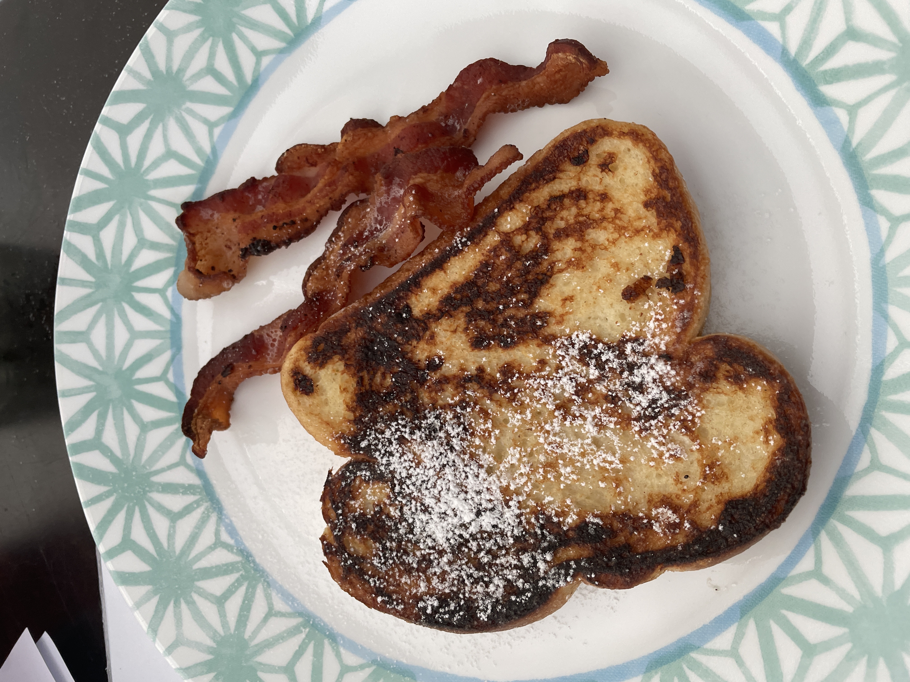

French Toast

Consumers of this French Toast are saying, ""I used fresh French bread with this recipe. It came out quite good.
I added a little bit of sugar to the recipe to give it a little sweetness and I topped it off with powdered sugar!"
"Fast and easy, and made with ingredients you already likely have in the house."
Clearly, this is a recipe that is a must-have in your breakfast repertoire. Read below to learn it for yourself!
Ingredients
- 2/3 cup milk
- 2 large eggs
- 1 teaspoon vanilla extract (optional)
- (1/4 teaspoon ground cinnamon)
- salt to taste
- 6 thick slices bread
- 1 tablespoon unsalted butter, or more as needed
Steps
- Whisk milk, eggs, vanilla, cinnamon, and salt together in a shallow bowl.
- Lightly butter a griddle and heat over medium-high heat.
- Dunk bread in the egg mixture, soaking both sides. Transfer to the hot skillet and cook until golden, 3 to 4 minutes per side. Serve hot.